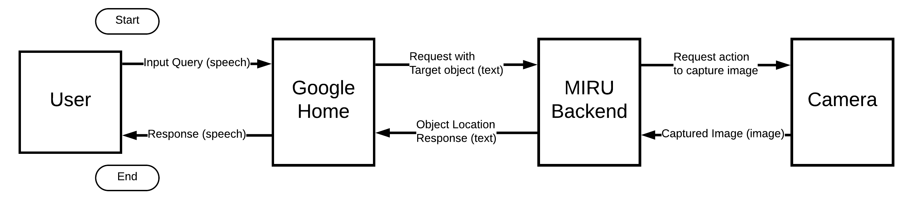
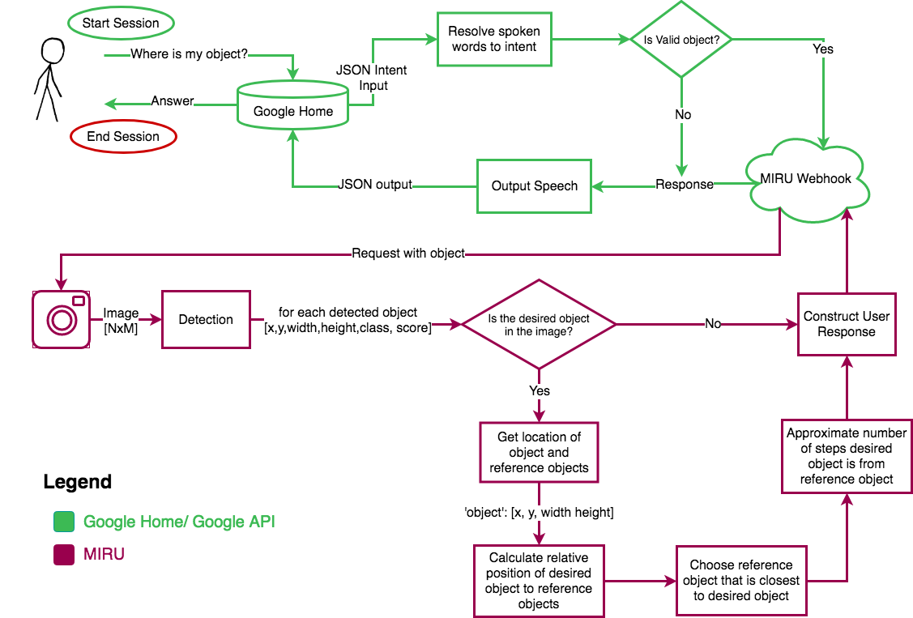
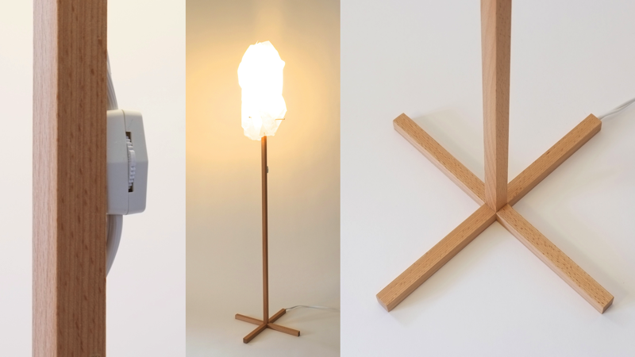

Systems Design Engineering Capstone Projects 2018
Group #13: w三p
Anshuman Patnaik, Linda Wang, Edrick Wong, Justin Wong
Situation of Concern
The project focuses on improving the kitchen experience for visually impaired individuals. Specifically, the target users are blind individuals who once had vision but are now visually impaired. The target group lives in an average North American household shared with other tenants. The household consists of a normal kitchen and the users dislike common aids that would label them as blind individuals .The proposed solution uses existing technologies including a USB camera, Google Home, Google Assistant, and Tensorflow framework. In a nutshell, a user can ask Google Assistant, an interactive intelligent assistive system, for the location of an object. Google will fetch visual information from the camera, send it to a cloud-based service involving object recognition and location determination via a trained object detection model. Finally, inquiries are surfaced back to the user via the Google Home as audio feedback. All the technology needed to capture visual information, recognize and determine objects via computer vision, interpret speech commands, etc. is available but will be integrated and packaged together into a natural and empowering kitchen experience for the user.

System Diagram
Why Does This Matter?
Fundamentally, MIRU is trying to create a social impact for visually impaired individuals. The goal of MIRU is to bridge the interaction between sighted friends and families and the visually impaired individual. A positive impact of MIRU is that it provides the visually impaired individual an autonomous level of situational and environmental awareness that was not available to them before, and at the same time, leverages a platform that can be used by others for other purposes. As well, there are currently no general solutions to this problem; it is an area that has not been thoroughly explored from the perspective of the user.

Functional Diagram
Designed Solution
The designed solution consists of a Google Home as the user interface and an SSD Mobile-net object detection framework as the backend. The Google Home accepts a user’s speech request, converts the speech to text, and extracts the specified object of interest and intent from the request. If Google Home does not recognize the object it will respond to the user at this point. Otherwise, the object and intent is passed to the backend object detector component. The object detection framework analyzes the frame passed by the camera and returns a list of detected objects, bounding boxes for each of the boxes and their associated probabilities. These results from the neural net are used in conjunction with information about reference objects to build an allocentric response for the user. This response is passed back to the Google Home that relays an audio response back to the user.

Prototype
 Change This Title Appropriately
Change This Title Appropriately